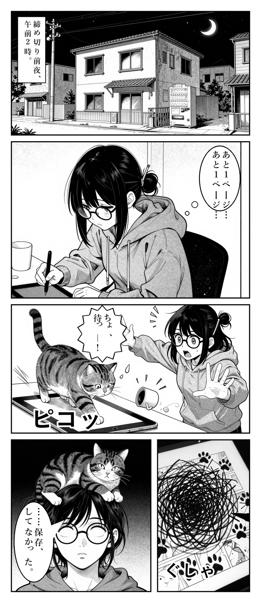

まんが化工房の3つの良さ
低価格
予定価格は1ページ1,500円から（有料の受付開始前）で、ネーム・作画・セリフ入れを含みます。参考に、2026年10月24日にココナラで見た人の作画による小説の漫画化の出品6件では、5件が1ページ8,000円でした。AI作画のため、品質は人の作画と同じではありません。
短納期
AIを活用するため、短い納期で対応いたします。具体的な納期については、お見積りの際にご連絡いたします。
正式な漫画化の前の試作に
漫画制作会社や漫画家さんに正式に依頼する前に、ネーム（コマ割り）と絵の方向を形にできます。企画書や打ち合わせの叩き台、プロットの見直しに使えます。依頼先がAI作画の資料を受け付けるかは、先にご確認ください（正式な依頼の条件になるものではありません）。
価格と納期の比べ方は、2026年10月24日に当工房がココナラで調べた限られた範囲の結果です（くわしくは下の「料金」）。当工房はAI作画のため、手描きより仕上がりの精度が劣る場合があります。
見本：原作の文章が、このページになります
原作（第一話の冒頭）
一つ、二つ。
乗合馬車の踏み段を下りたところで、塔の鐘が鳴りはじめた。腹の底に響く低い音で、広場の石畳まで震えている。
御者が懐中時計を出して、帽子を取った。
「七時五分。おう、今年も鳴ったか。ちと音が細えな」
「今年も、ですか？」
小説「止まった時計塔の修繕屋」より。原作は当工房の自作です（人とAIの共作）。
↑ 地の文はナレーションと絵に、会話は吹き出しに振り分けます（AI作画・写植は当工房）。

見本2：オチまで1ページの短い話（AI作画・話は当工房のオリジナル）。同じ人物と猫を、コマをまたいでそろえています。
お客様の作品
お試しの方の作品を、ご許可をいただいたものから順にご紹介します（準備中）。ご希望があれば、作品ページや小説サイトへのリンクと、いただいた感想もあわせて載せます。感想は掲載のご許可をいただいたものだけを、文の意味を変えず、良い所だけを切り取らずに載せます（誤字や長さを直すときは、事前に直した文で確認します）。感想の横には、無料のお試しの方か、有料のご依頼の方かを表示します。紹介するかどうかは、お届けのときにお尋ねし、お返事で決めます。後から取り下げることもできます。
できること
- ネーム原作を読み、場面をコマに割って、セリフの順番と大きさを決めます。原作の言葉をできるだけ残します。
- 作画人物の見た目（髪・服・年齢）を決めてから、AIで1コマずつ描きます。崩れたコマは選び直します。
- 写植と仕上げ吹き出し・縦書きのセリフ・ナレーション・擬音を入れ、ページに組んで画像（PNG）とPDFでお渡しします。
料金（予定・お見積り制）
| お試し（先着10名） | 無料 | 原作の冒頭から1ページ（3〜5コマ）。白黒。 |
|---|---|---|
| 有料サンプル（1ページ・受付開始前の予定） | 1,500円 | お好きな場面を1ページ（白黒・横読み）。お試しの後に、別の場面や絵柄を確かめたいときに。 |
| 2ページ以上・全話のご依頼（受付開始前の予定） | お見積り | 原作の文字数と見込みのページ数、登場人物の数、ご要望（直しの回数・縦読み・カラー・お急ぎ、キャラクターシート・背景シートの事前確認など）を見て、作業の前にお見積りをお出しします。お見積りにご同意いただいてから作業を始めます。 |
税込の予定です。有料の受付はまだ始めていません。始めるときに、支払い方法と特定商取引法に基づく表記をこのページに載せます。当工房の1例では、原作約1万2千字のネームが8ページ分になりました（ページ数は内容で大きく変わります）。
参考：ココナラで調べた、人の作画による漫画化
- 1ページの価格：調べた6件のうち、8,000円が5件、10,000円以上が1件
- 販売実績がある出品：6件のうち2件
- 納期：出品者によって異なり、数か月先まで予約で埋まっている出品もありました
2026年10月24日、当工房がスキル販売サイト「ココナラ」で「小説 漫画化」「コミカライズ」などを検索し、目で見て確かめた限られた範囲の結果です。相場全体を表すものではありません（調べた記録は当工房で保管しています）。価格は出品ページに書かれた額です。当工房はAI作画のため、手描きより仕上がりの精度が劣る場合があり、著作権の扱いも人の作画とは異なることがあります。当工房の納期は、お試しで1週間ほど、有料は未定です。
お試しの流れ
- 下のボタンから申し込む（メールアドレスと、作品の簡単な説明だけ）
- こちらからメールで、原作と設定の送り方をご案内します（ファイルの添付もできます）
- 1週間ほどで、冒頭の1ページ分の画像をメールでお届けします（混み具合により前後します）
- 続きをご希望なら、お見積りをお出しします（有料の受付開始後）
- ご希望の方だけ、このサイトの「お客様の作品」で紹介します（作品へのリンクも載せられます）
ご依頼のときにお願いしたいこと
小説の漫画化でいちばん避けたいのは、あとで効いてくる伏線や、何気ない一言が抜け落ちることです。当工房の見本の制作時にも、御者の「ちと音が細えな」という一言を最初のネームで落としてしまい、作者の指摘で戻しました。この一言は、物語の大事な伏線だったからです。
おすすめ：全話まとめてのご依頼
- 漫画にするのが一部の話でも、できれば今ある全話の原稿をお送りください。全体を読んでから、伏線を落とさないネームを作ります
- お試しで描くのは冒頭の1ページだけです。全話の原稿はお試しでも歓迎しますが、冒頭だけでもかまいません（全話のお送りは、主に有料のご依頼でのおすすめです）
- 何話分を何ページにしたいか、宣伝用か試し読みか、などの使い道も教えてください
あると助かるもの
- キャラクター設定：年齢・髪・服・目印などの見た目、口調、人物どうしの関係
- 伏線のメモ：あとで回収する伏線、必ず残したいセリフや描写、まだ絵で見せたくないこと
- 設定資料・ラフ・参考の画像（お持ちの方だけ）
添付できるファイル：テキスト（.txt）・Word（.docx）・PDF・画像（.png・.jpg）。圧縮ファイル（.zip など）・実行ファイル・マクロ付きのファイルは開けません。メール1通あたり合計25MBまでです。
向いている使い方
向いている
- Web小説の宣伝（Xや小説サイトの近況・紹介ページに）
- 「漫画にするとこうなる」の試し読み・企画の見本
- 漫画制作会社・漫画家さんへの正式な依頼の前の、プロットやネームの叩き台（依頼先には、AI作画の試作であることをお伝えください）
- 自分の作品を絵で読んで楽しむ
向いていない
- 生成AIの作品を受け付けない賞への応募（例：LINEマンガの各賞は、部分的な使用でも対象外です。2026年10月時点の応募規約）
- AIで描いた画像の販売を禁じている場所での再販売
- 全コマで人物の顔を寸分違わずそろえたい場合
先にお伝えすること
- 作画は生成AIです。公開するときは、掲載先の決まりに沿って「AI使用」と表示してください。
- 細かい所が崩れることがあります。手や小物はいくつか描いて良いものを選びますが、手描きと同じ精度ではありません。
- 権利について：お渡しした漫画は、宣伝や掲載などにお使いいただけます。ただし、AIで描いた部分に著作権が生じるかどうかは保証できません（文化庁「AIと著作権に関する考え方」では、人の創作的な関わりの程度で判断するとされています）。
- 原作はご自身の作品に限ります。他の方の作品や二次創作はお受けできません。
- 原稿の扱い：ネームづくりのため、原稿の文章を Anthropic社（米国）の文章AI「Claude」に読み込ませます（入力を学習に使わない契約で利用）。絵は Hugging Face 上で公開されている画像AI（Z-Image）で描き、送るのは場面の説明（英語の短い指示）だけです。原稿の文章や、あなたのお名前・メールアドレスは送りません（登場人物の名前は、場面の説明に入ることがあります）。お送りいただいたメールと添付ファイルは、当工房の Gmail（Google のメールサービス）に保存されます。お預かりした原稿は作業以外に使わず、作業用の写しはお届けから30日で削除します。メールは最後のやりとりから1年で削除します。
よくある質問
小説の漫画化（コミカライズ）の依頼先は、どう選べばいいですか？
使い道と予算で選ぶのがおすすめです。手描きの品質を求めるなら漫画家・イラストレーターや漫画制作会社、まず安く早く形にしたいならAI作画のサービスが向いています。依頼先の比べ方・費用の目安・依頼文の例は「小説の漫画化・コミカライズを依頼したい方へ」にまとめました。
「AI使用」と書くと、読者に嫌われませんか？
正直なところ、まだ数字は集めている途中です。カクヨムや小説家になろうのように、AIの使い方を申告して載せる決まりのある場所があります。宣伝に使う場合は、作画にAIを使ったことを添えるのがおすすめです。お試しの方の反応は、許可をいただけたらこのページで紹介します。
人物や背景の絵を、ページの前に確認できますか？
有料のご依頼では、ご希望があれば、主な登場人物の「キャラクターシート」と、よく出てくる場所の「背景シート」を、ページを描く前にお送りして確認していただけます。シートは1人・1か所500円で、描き直し2回まで含みます（3回目からは1回200円）。お試しと有料サンプル（1ページ）は対象外です。
縦読み（ウェブトゥーン）やカラーはできますか？
今は白黒の横読みページが中心です。縦読み・カラーはお試しの後にご相談ください。
直してもらえますか？
お試しと有料サンプル（1ページ）は直しなしでお届けします。2ページ以上のご依頼では、1回までの直しを含め、2回目からは1回ごとにお見積りの合計の1割を加える予定です。
名前を出さずに頼めますか？
はい。ペンネームで大丈夫です。このサイトでの紹介も、お返事で許可をいただいた場合だけで、表示するのはご指定のペンネーム・作品名です（本名やメールアドレスは表示しません）。
作品を紹介してもらえますか？
はい、ご希望の方だけ「お客様の作品」に載せます。表示するお名前（ペンネーム・作品名）と、リンク先（作品ページ・小説サイト・SNS など）はご指定どおりにします。感想も、掲載のご許可をいただいた場合だけ、文の意味を変えず、良い所だけを切り取らずに載せ、無料のお試しの方か有料の方かを表示します。リンクは、内容を確認したうえで載せます（載せられない場合は理由をご連絡します）。取り下げや変更は、いつでもメールでご連絡ください。
どのくらいの長さまで漫画にできますか？
当工房の1例では、原作約1万2千字のネームが8ページ分になりました（内容によって大きく変わります）。長い作品は話数ごとにお受けします。漫画化の方法ごとの費用や流れは「小説を漫画にする方法と費用の目安」にまとめました。
運営について
まんが化工房は個人運営です。運営者自身がWeb小説をAIと共作していて、自分の作品を漫画にする仕組み（ネーム・作画・縦書きの写植）を作りました。それを他の書き手の方にも使っていただくために始めました。上の見本1は、その自作の小説を漫画にしたものです。
お問い合わせ：info@cocreturn.com（2営業日以内にお返事します）